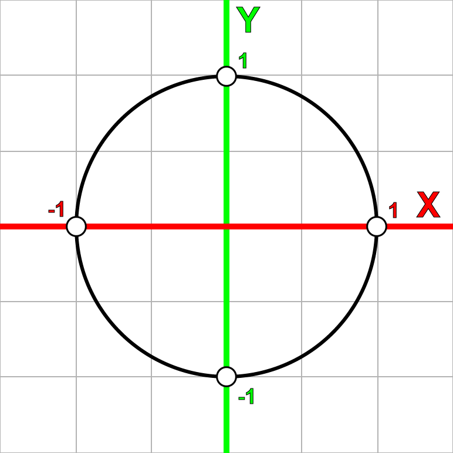
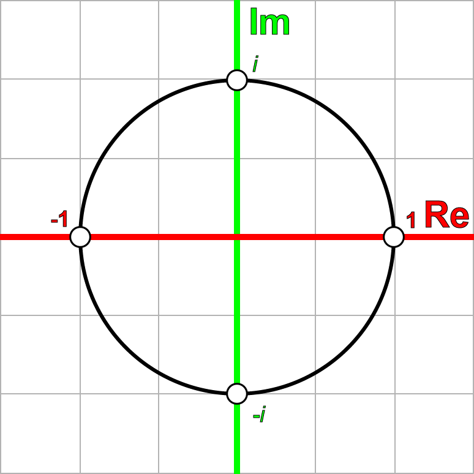
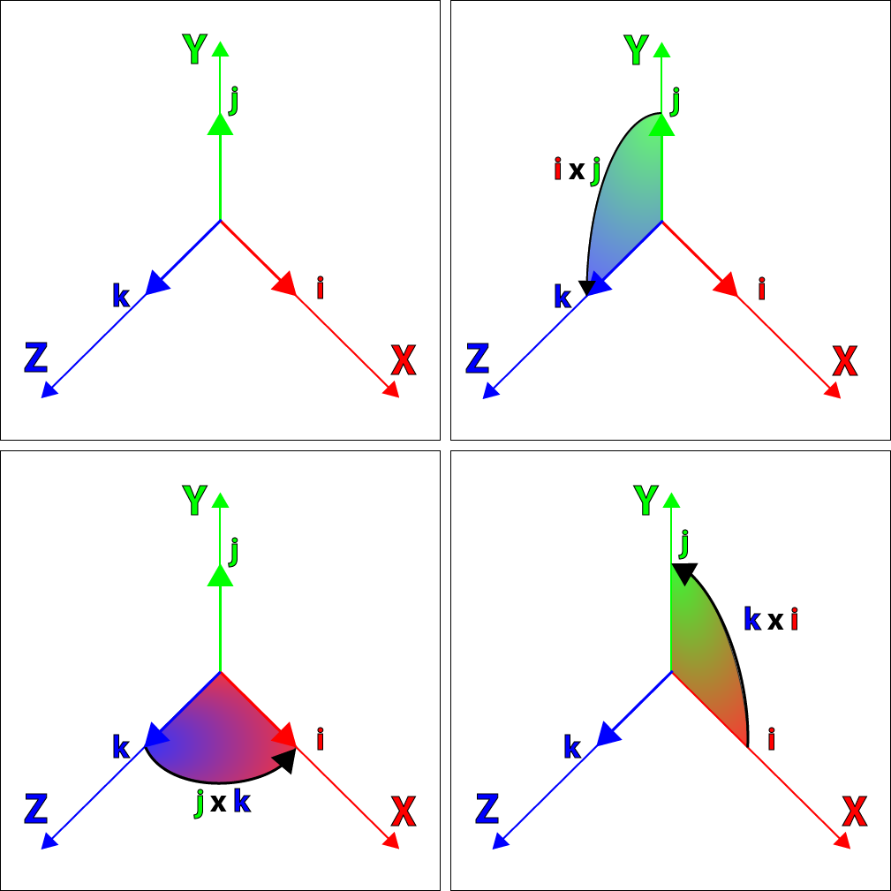
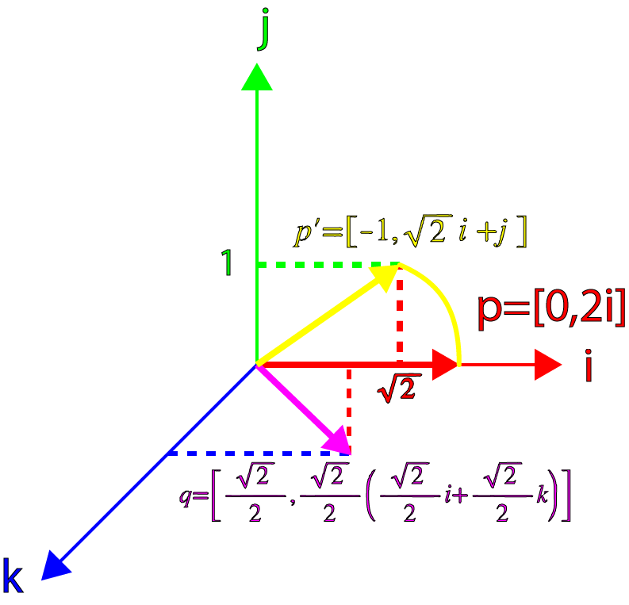
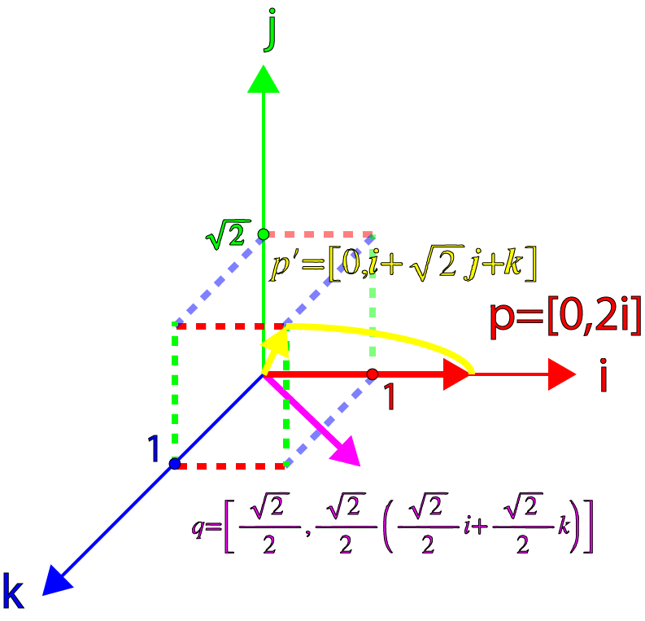

原文地址:http://www.3dgep.com/understanding-quaternions/
正文
在这篇文章中我会尝试用简单的方式去解释四元数的概念，即用可视化的方式解释四元数以及几种对四元数的操作。我将把矩阵、欧拉角和四元数放在一起比较，并解释什么时候该用四元数、什么时候该用欧拉角或矩阵。
内容结构
介绍
在计算机图形学中，我们使用转换矩阵来表示空间中的一个位置以及朝向。一个转换矩阵还可以表示对一个目标的缩放(scale)或错切(shear)等。 我们可以把转换矩阵想象成一个空间，当你用这个矩阵乘以向量、点（甚至矩阵）后， 你就把向量、点、矩阵转换进这个空间了。
在这篇文章中，我不会讨论转换矩阵的细节。你可以查看我前面的文章，文章中描述了转换矩阵的细节。
在这篇文章中，我想要讨论一个可替代的方案，即用四元数来描述空间里的物体的朝向。
四元数的概念是由爱尔兰数学家Sir William Rowan Hamilton发明的（1843年，都柏林）。Hamilton当时正和他的妻子前往爱尔兰皇家研究院，当他从Brougham桥通过皇家运河时，他领悟到了一个激动人心的东西，并立刻把它刻在桥的一个石头上：
\[ \mathbf i^{2} = \mathbf j^{2} = \mathbf k^{2} = \mathbf i \mathbf j \mathbf k = -1 \]

William Rowan Hamilton Plaque on Broome Bridge on the Royal Canal commemorating his discovery of the fundamental formula for quaternion multiplication.
复数
在我们能够完全理解四元数之前，我们必须先知道四元数是怎么来的。四元数的根源其实是复数。
除了知名的数集（自然数、整数、实数、分数）之外，复数系统引入了一个新的数集——虚数。虚数的发明是为了解决一些特定的无解的方程，例如： \[ x^{2} + 1 = 0 \] 要解决这个等式，必须让\(x^{2} = -1 \)，这当然是不行的，因为任意实数的平方都是非负数。
一般而言，数学家是不能忍受一个等式是无解的。于是，一个新的术语被发明了，它就是虚数，一个可以解决上面这个等式的数。
虚数有这样的形式：
\[ \mathbf i^{2} = -1 \]
不要为这个术语较真，因为逻辑上这个数是不存在的。只要知道i是一个平方等于-1的东西即可。
虚数的集合可以用\( \mathbb{I} \)来表示。
复数的集合\( \mathbb{C} \)是一个实数和一个虚数的和，形式如下：
\[ z = a + b\mathbf i \ a,b\in R,\ \mathbf i^{2} = -1 \]
可以认为所有实数都是b=0的复数、所有虚数都是a=0的复数。
复数的加减
加法：
\[ (a_{1} + b_{1}\mathbf i) + (a_{2} + b_{2}\mathbf i) = (a_{1} + a_{2}) + (b_{1} + b_{2})\mathbf i \]
减法：
\[ (a_{1} + b_{1}\mathbf i) - (a_{2} + b_{2}\mathbf i) = (a_{1} - a_{2}) + (b_{1} - b_{2})\mathbf i \]
复数的系数缩放
\[ \lambda (a_{1} + b_{1}\mathbf i) = \lambda a_{1} + \lambda b_{1}\mathbf i \]
复数的积
\[ z_{1} = (a_{1} + b_{1}\mathbf i) \] \[ z_{2} = (a_{2} + b_{2}\mathbf i) \] \[ z_{1}z_{2} = (a_{1} + b_{1}\mathbf i)(a_{2} + b_{2}\mathbf i) = a_{1}a_{2} + a_{1}b_{2}\mathbf i + b_{1}a_{2}\mathbf i + b_{1}b_{2}\mathbf i^{2} \] \[ z_{1}z_{2} = (a_{1}a_{2} - b_{1}b_{2}) + (a_{1}b_{2} + b_{1}a_{2})\mathbf i \]
复数的平方
\[ z = (a + b\mathbf i) \] \[ z^{2} = (a + b\mathbf i)(a + b\mathbf i) \] \[ z^{2} = (a^{2} - b^{2}) + 2ab\mathbf i \]
共轭复数
复数的共轭就是指把复数的虚数部分变成负的。共轭复数的符号是\(\bar z\)或\(z^{*}\)。
\[ z = (a + b\mathbf i) \]
\[ z^{*} = (a - b\mathbf i) \]
复数和它的共轭复数的乘积是：
\[ zz^{*} = (a + b\mathbf i)(a - b\mathbf i) = a^{2}-ab\mathbf i + ab\mathbf i + b^{2} = a^{2}+b^{2} \]
复数的绝对值
我们使用共轭复数来计算复数的绝对值：
\[ z = (a + b\mathbf i) \]
\[ |z| = \sqrt {zz^{*}} = \sqrt {(a + b\mathbf i)(a - b\mathbf i)} = \sqrt {a^{2} + b^{2} } \]
两复数的商
\[ z_{1} = (a_{1} + b_{1}\mathbf i) \] \[ z_{2} = (a_{2} + b_{2}\mathbf i) \] \[ \frac {z_{1}}{z_{2}} = \frac {a_{1} + b_{1}\mathbf i}{a_{2} + b_{2}\mathbf i} = \frac {(a_{1} + b_{1}\mathbf i)(a_{2} - b_{2}\mathbf i)}{(a_{2} + b_{2}\mathbf i)(a_{2} - b_{2}\mathbf i)} \] \[ = \frac {a_{1}a_{2}-a_{1}b_{2}\mathbf i+b_{1}a_{2}\mathbf i-b_{1}b_{2}\mathbf i^{2} }{a_{2}^{2} + b_{2}^{2}} \]
\[ = \frac {a_{1}a_{2} + b_{1}b_{2} }{a_{2}^{2} + b_{2}^{2}} + \frac {b_{1}a_{2} - a_{1}b_{2} }{a_{2}^{2} + b_{2}^{2}}\mathbf i \]
i的幂
如果\(\mathbf i\)的平方等于-1，那么\(\mathbf i\)的n次幂也应该存在：
\[ \mathbf i^{0} = 1 \] \[ \mathbf i^{1} = \mathbf i \] \[ \mathbf i^{2} = -1 \] \[ \mathbf i^{3} = \mathbf i\mathbf i^{2} = -i \] \[ \mathbf i^{4} = \mathbf i^{2}\mathbf i^{2} = 1 \] \[ \mathbf i^{5} = \mathbf i \mathbf i^{4} = i \] \[ \mathbf i^{6} = \mathbf i\mathbf i^{5} = \mathbf i^{2} = -1 \]
如果按照这个顺序写下去，会出现这样一个模式： (1,\mathbf i,-1,-\mathbf i,1,...)
一个类似的模式也出现在递增的负数幂：
\[ \mathbf i^{0} = 1 \] \[ \mathbf i^{-1} = -i \] \[ \mathbf i^{-2} = -1 \] \[ \mathbf i^{-3} = i \] \[ \mathbf i^{-4} = 1 \] \[ \mathbf i^{-5} = -i \] \[ \mathbf i^{-6} = -1 \]
你可能已经在数学里头见过类似的模式，但是是以（x,y,-x,-y,x,...)的形式，这是在2D笛卡尔平面对一个点逆时针旋转90度时生成的；（x,-y,-x,y,x,...)则是在2D笛卡尔平面对一个点顺时针旋转90度时生成的。

复数平面
我们也能够把复数映射到一个2D网格平面——复数平面，只需要把实数映射到横轴、虚数映射到纵轴。

如前面的序列所示，我们可以认为，对一个复数乘以i，这个复数就在复数平面上旋转了90度。
让我们看看这是不是真的。我们随机地在复数平面上取一个点：
\[ p = 2 + \mathbf i \]
p乘以i后得到q： \[ q = p\mathbf i = (2+\mathbf i)\mathbf i = 2\mathbf i + \mathbf i^{2} = -1 + 2\mathbf i \]
q乘以i后得到r： \[ r = q\mathbf i = (-1 + 2\mathbf i)\mathbf i = -\mathbf i + 2\mathbf i^{2} = -2 -\mathbf i \]
r乘以i后得到s： \[ s = r\mathbf i = (-2 - \mathbf i)\mathbf i = -2\mathbf i-\mathbf i^{2} = 1 - 2\mathbf i \]
s乘以i后得到t： \[ t = s\mathbf i = (1-2\mathbf i)\mathbf i = \mathbf i - 2\mathbf i^{2} = 2 + \mathbf i \]
t刚好是开始的p。如果我们把这些复数放到复数平面上，就得到下面的图：

我们也可以按顺时针方向旋转，只需要把上面的乘数i改成-i。
旋转数（Rotors)
我们也可以在复数平面上进行任意角度的旋转，只需要定义下面这个复数： \[q = cos\theta + \mathbf i sin\theta \]
任意的复数乘以q：
\[ p = a + b\mathbf i \] \[ q = cos\theta + \mathbf i sin\theta \] \[ pq = (a + b\mathbf i)(cos\theta + \mathbf i sin\theta ) \] \[ a' + b'\mathbf i = acos\theta -bsin\theta + (asin\theta +bcos\theta )\mathbf i \]
也可以写成矩阵的形式：
\[ \left[ \begin{matrix} a'&-b'\\ b'&a'\\ \end{matrix} \right] = \left[ \begin{matrix} cos\theta &-sin\theta \\ sin\theta &cos\theta \\ \end{matrix} \right] \left[ \begin{matrix} a&-b\\ b&a\\ \end{matrix} \right] \]
这也是一个在复数平面绕原点逆时针旋转任意点的方法。（译注：这句话应该是在说旋转矩阵）
四元数
了解了复数系统和复数平面后，我们可以额外增加2个虚数到我们的复数系统，从而把这些概念拓展到3维空间。
四元数的一般形式：
\[ q = s + x\mathbf i + y\mathbf j + z\mathbf k \ \ \ s,x,y,z \in \mathbb{R} \]
上面的公式是根据Hamilton的著名的表达式得到的：
\[ \mathbf i^{2} = \mathbf j^{2} = \mathbf k^{2} = \mathbf i\mathbf j\mathbf k = -1 \]
以及：
\[ \mathbf i \mathbf j = \mathbf k \ \ \ \mathbf j \mathbf k = \mathbf i \ \ \ \mathbf k \mathbf i = \mathbf j \] \[ \mathbf j \mathbf i = -\mathbf k \ \ \ \mathbf k \mathbf j = -\mathbf i \ \ \ \mathbf i \mathbf k = -\mathbf j \]
你可能已经注意到了，i、j、k之间的关系非常像笛卡尔坐标系下单位向量的叉积规则：
\[ \mathbf x\times \mathbf y = \mathbf z \ \ \ \mathbf y\times \mathbf z = \mathbf x \ \ \ \mathbf z\times \mathbf x = \mathbf y \] \[ \mathbf y\times \mathbf x = -\mathbf z \ \ \ \mathbf z\times \mathbf y = -\mathbf x \ \ \ \mathbf x\times \mathbf z = -\mathbf y \]
Hamilton自己也发现i、j、k虚数可以被用来表达3个笛卡尔坐标系单位向量i、j、k，并且仍然保持有虚数的性质，也即\( \mathbf i^{2} = \mathbf j^{2} = \mathbf k^{2} = -1 \)。
 （\mathbf i \mathbf j, \mathbf j \mathbf k, \mathbf k \mathbf i这几个性质的可视化）
上图展示了如何用i、j、k作为笛卡尔坐标系的单位向量。
作为有序数的四元数
我们可以用有序对的形式，来表示四元数： \[ [s,\mathbf {v}] \ \ \ s\in \mathbb{R},v\in \mathbb{R^{3}} \]
其中的v，也可以用它各自独立的3个分量表示：
\[ q = [s,x\mathbf i + y\mathbf j + z\mathbf k] \ \ \ s,x,y,z\in \mathbb{R} \]
使用这种表示法，我们可以更容易地展示四元数和复数之间的相似性。
四元数的加减
和复数类似，四元数也可以被加减：
\[ q_{a} = [s_{a},\mathbf {a}] \] \[ q_{b} = [s_{b},\mathbf {b}] \] \[ q_{a} + q_{b} = [s_{a} + s_{b},\mathbf {a} + \mathbf {b}] \] \[ q_{a} - q_{b} = [s_{a} - s_{b},\mathbf {a} - \mathbf {b}] \]
四元数的积
我们也可以表示四元数的乘积：
\[ q_{a}q_{b} = [s_{a},\mathbf {a}][s_{b},\mathbf {b}] \] \[ = (s_{a} + x_{a}\mathbf i + y_{a}\mathbf j +z_{a}\mathbf k)(s_{b} + x_{b}\mathbf i + y_{b}\mathbf j +z_{b}\mathbf k) \] \[ = (s_{a}s_{b} - x_{a}x_{b} - y_{a}y_{b} - z_{a}z_{b}) \] \[ + (s_{a}x_{b} + s_{b}x_{a} + y_{a}z_{b} - y_{b}z_{a})\mathbf i \] \[ + (s_{a}y_{b}+s_{b}y_{a}+z_{a}x_{b}-z_{b}x_{a})\mathbf j \] \[ + (s_{a}z_{b}+s_{b}z_{a}+x_{a}y_{b}-x_{b}y_{a})\mathbf k \]
可以看到，四元数的乘积依然还是一个四元数。如果我们把虚数\(\mathbf i、\mathbf j、\mathbf k\)替换成有序对：
\[ \mathbf i = [0, \mathbf i]\ \ \ \mathbf j = [0, \mathbf j]\ \ \ \mathbf k = [0, \mathbf k] \]
以及还有[1,0] = 1，将它们代入前面的表达式，就得到了：
\[ q_{a}q_{b} = (s_{a}s_{b} - x_{a}x_{b} - y_{a}y_{b} - z_{a}z_{b})[1,\mathbf 0] \] \[ + (s_{a}x_{b} + s_{b}x_{a} + y_{a}z_{b} - y_{b}z_{a})[0,\mathbf i] \] \[ + (s_{a}y_{b}+s_{b}y_{a}+z_{a}x_{b}-z_{b}x_{a})[0,\mathbf j] \] \[ + (s_{a}z_{b}+s_{b}z_{a}+x_{a}y_{b}-x_{b}y_{a})[0,\mathbf k] \]
再把这个表达式扩展成多个有序对的和：
\[ q_{a}q_{b} = [(s_{a}s_{b} - x_{a}x_{b} - y_{a}y_{b} - z_{a}z_{b}),\mathbf 0] \] \[ + [0,(s_{a}x_{b} + s_{b}x_{a} + y_{a}z_{b} - y_{b}z_{a})\mathbf i] \] \[ + [0,(s_{a}y_{b}+s_{b}y_{a}+z_{a}x_{b}-z_{b}x_{a})\mathbf j] \] \[ + [0,(s_{a}z_{b}+s_{b}z_{a}+x_{a}y_{b}-x_{b}y_{a})\mathbf k] \]
如果把后3个四元数相加，并提取公共部分，就可以把等式改写成：
\[ q_{a}q_{b} = [(s_{a}s_{b} - x_{a}x_{b} - y_{a}y_{b} - z_{a}z_{b}),\mathbf 0] \] \[ + [0,s_{a}(x_{b}\mathbf i + y_{b}\mathbf j + z_{b}\mathbf k) + s_{b}(x_{a}\mathbf i + y_{a}\mathbf j + z_{a}\mathbf k)\] \[+(y_{a}z_{b}-y_{b}z_{a})\mathbf i + (z_{a}x_{b}-z_{b}x_{a})\mathbf j + (x_{a}y_{b}-x_{b}y_{a})\mathbf k] \]
这个等式是2个有序对的和。第1个有序对是一个实四元数，第2个是一个纯四元数。这两个四元数也可以合并成一个：
\[ q_{a}q_{b} = [(s_{a}s_{b} - x_{a}x_{b} - y_{a}y_{b} - z_{a}z_{b}), \] \[ s_{a}(x_{b}\mathbf i + y_{b}\mathbf j+z_{b}\mathbf k) + s_{b}(x_{a}\mathbf i+y_{a}\mathbf j+z_{a}\mathbf k)\] \[+(y_{a}z_{b}-y_{b}z_{a})\mathbf i+(z_{a}x_{b}-z_{b}x_{a})\mathbf j+(x_{a}y_{b}-x_{b}y_{a})\mathbf k] \]
如果把下面的表达式代入上面的等式：
\[ \mathbf a = x_{a}\mathbf i + y_{a}\mathbf j + z_{a}\mathbf k\] \[ \mathbf b = x_{b}\mathbf i + y_{b}\mathbf j + z_{b}\mathbf k\] \[ \mathbf a\cdot \mathbf b = x_{a}x_{b} + y_{a}y_{b} + z_{a}z_{b} \] \[ \mathbf a\times \mathbf b = (y_{a}z_{b}-y_{b}z_{a})\mathbf i + (z_{a}x_{b} - z_{b}x_{a})\mathbf j + (x_{a}y_{b} - x_{b}y_{a})\mathbf k \]
（译注：注意，第三条和第四条并不是四元数的点积和叉积，而是向量的点积和叉积）
我们就得到了：
\[ q_{a}q_{b} = [s_{a}s_{b} - \mathbf a\cdot \mathbf b, s_{a}\mathbf b + s_{b}\mathbf a + \mathbf a\times \mathbf b] \]
这就是四元数乘积的一般式。
实四元数
一个实四元数是一个虚部向量为零向量的四元数：
\[ q = [s,\mathbf {0}] \]
两个实四元数的乘积是另一个实四元数：
\[ q_{a} = [s_{a},\mathbf {0}] \] \[ q_{b} = [s_{b},\mathbf {0}] \] \[ q_{a}q_{b} = [s_{a},\mathbf {0}] [s_{b},\mathbf {0}] = [s_{a}s_{b},\mathbf {0}] \]
这和2个虚部为0的复数的乘积几乎一样：
\[ z_{1} = a_{1} + 0\mathbf i \] \[ z_{2} = a_{2} + 0\mathbf i \] \[ z_{1}z_{2} = (a_{1} + 0\mathbf i)(a_{2} + 0\mathbf i) = a_{1}a_{2} \]
四元数的系数缩放
我们也可以用一个系数（实数）去乘四元数：
\[ q = [s,\mathbf {v}] \] \[ \lambda q = \lambda [s,\mathbf {v}] = [\lambda s,\lambda \mathbf {v}] \]
我们可以用实四元数与普通四元数的乘积，来确认这个等式是否正确：
\[ q = [s,\mathbf {v}] \] \[ \lambda = [\lambda ,0] \] \[ \lambda q = [\lambda ,\mathbf {0}][s,\mathbf {v}] = [\lambda s,\lambda v] \]
纯四元数
和实四元数相似，Hamilton也定义了纯四元数。纯四元数是s=0的四元数：
\[ q = [0,\mathbf { v }] \]
也可以写成下面的形式：
\[ q = x\mathbf { i } + y\mathbf { k } + z\mathbf { k } \]
然后是2个纯四元数的乘积：
\[ q_{a} = [0,\mathbf { a }] \] \[ q_{b} = [0,\mathbf { b }] \] \[ q_{a}q_{b} = [0,\mathbf { a }] [0, \mathbf { b }] = [-\mathbf { a }\cdot \mathbf { b }, \mathbf { a }\times \mathbf { b }] \]
四元数的加法形式
我们可以把四元数写成实四元数和纯四元数的和：
\[ q = [s, \mathbf { v }] \] \[ = [s, \mathbf { 0 }] + [0, \mathbf { v }] \]
单位四元数
给定任意的向量v，我们可以把这个向量写成一个系数和一个单位方向向量的乘积：
\[ \mathbf { v } = v\mathbf { \hat { \mathbf v } } \ \ v = |\mathbf {v}|,|\mathbf { \hat { \mathbf v } }|=1\]
将这个定义和纯四元数的定义结合，就得到了：
\[ q = [0,\mathbf { v }] \] \[ = [0, v \mathbf { \hat { \mathbf v } }] \] \[ = v[0, \mathbf { \hat { \mathbf v } }] \]
然后，我们可以定义单位四元数了，它是一个s=0、\( \mathbf { v } \)为单位向量的四元数：
\[ \hat {q} = [0, \mathbf { \hat { \mathbf v } }] \]
四元数的二元形式
我们现在可以把单位四元数的定义和四元数的加法形式结合到一起，就创造了一种新的四元数的表示法，这种表示法和复数的表示法形似：
\[ q = [s,\mathbf { v }] \] \[ = [s,\mathbf { 0 }] + [0, \mathbf { v }] \] \[ = [s,\mathbf { 0 }] + v [0,\mathbf { \hat { \mathbf v }}] \] \[ = s + v \mathbf {\hat {q} }\]
这就给了我们一种和复数非常相似的四元数表示法：
\[ z = a + b \mathbf {i} \] \[ q = s + v \mathbf {\hat {q}} \]
共轭四元数
共轭四元数的计算，就是将四元数的虚向量取反：
\[ q = [s,\mathbf {v}] \] \[ q^{*} = [s,-\mathbf {v}] \]
四元数和它的共轭四元数的乘积：
\[ qq^{*} = [s,\mathbf {v}][s,-\mathbf {v}] \] \[ = [s^{2} - \mathbf {v}\cdot (-\mathbf {v}),-s\mathbf {v}+s\mathbf {v}+\mathbf {v}\times (-\mathbf {v})] \] \[ = [s^{2} + \mathbf {v}\cdot \mathbf {v}, \mathbf {0}] \] \[ = [s^{2} + \mathbf {v}^{2}, \mathbf {0}] \]
四元数范数
回忆下复数范数的定义：
\[ |z| = \sqrt {a^{2}+b^{2}} \] \[ zz^{*} = |z|^{2} \]
类似的，四元数的范数可以这样定义：
\[ \mathbf q = [s,\mathbf {v}] \] \[ |\mathbf q| = \sqrt {s^{2} + v^{2}} \]
这也让我们可以这样表达四元数范数：
\[ \mathbf q\mathbf q^{*} = |\mathbf q|^{2} \]
四元数规范化
利用四元数范数的定义，就可以对四元数进行规范化。要让一个四元数规范化，只需要让这个四元数去除以它的范数：
\[ \mathbf q' = \frac {\mathbf q}{\sqrt {s^{2}+v^{2}}} \]
举一个例子，让我们规范化下面这个四元数：
\[ \mathbf q = [1, 4\mathbf i + 4\mathbf j - 4\mathbf k] \]
第一步，先计算q的范数：
\[ |\mathbf q| = \sqrt {1^{2}+4^{2}+4^{2}+(-4)^{2}} \] \[ = \sqrt {49} = 7 \]
然后，q除以|q|:
\[ \mathbf q' = \frac {\mathbf q}{|\mathbf q|} \] \[ = \frac {(1+4\mathbf i+4\mathbf j-4\mathbf k)}{7} \] \[ = \frac {1}{7}+\frac {4}{7}\mathbf i+\frac {4}{7}\mathbf j-\frac {4}{7}\mathbf k \]
四元数的逆
四元数的逆用\(\mathbf q^{-1} \)表示。要计算四元数的逆，需要用四元数的共轭四元数去除以四元数的范数的平方：
\[ \mathbf q^{-1} = \frac {\mathbf q^{*}}{|\mathbf q|^{2} } \]
为了证明这个式子，我们先根据逆的定义，有：
\[ \mathbf q\mathbf q^{-1} = [1,\mathbf 0] = 1 \]
两边都左乘共轭四元数 \( \mathbf q^{*} \) :
\[ \mathbf q^{ * }\mathbf q\mathbf q^{ -1 } = \mathbf q^{ * } \]
将上文中的\( \mathbf q\mathbf q^{*} = |\mathbf q|^{2} \)代入这个式子，得到：
\[ |\mathbf q|^{2}\mathbf q^{-1} = \mathbf q^{*} \]
\[ \mathbf q^{-1} = \frac {\mathbf q^{*}}{|\mathbf q|^{2}} \]
对于单位四元数，它的范数是1，所以可以写成：
\[ \mathbf q^{-1} = \mathbf q^{*} \]
四元数的点积
和向量的点积相似，我们也可以计算2个四元数的点积，只需要将各个对应的系数相乘，然后相加:
\[ \mathbf q_{1} = [s_{1},x_{1}\mathbf i+y_{1}\mathbf j+z_{1}\mathbf k] \] \[ \mathbf q_{2} = [s_{2},x_{2}\mathbf i+y_{2}\mathbf j+z_{2}\mathbf k] \] \[ \mathbf q_{1}\cdot \mathbf q_{2} = s_{1}s_{2}+x_{1}x_{2}+y_{1}y_{2}+z_{1}z_{2} \]
我们也可以利用四元数点积，来计算四元数之间的角度差：
\[ cos\theta = \frac {s_{1}s_{2}+x_{1}x_{2}+y_{1}y_{2}+z_{1}z_{2}}{|\mathbf q_{1}||\mathbf q_{2}|} \]
对于单位四元数，我们可以简化上面的等式： \[ cos\theta = s_{1}s_{2}+x_{1}x_{2}+y_{1}y_{2}+z_{1}z_{2} \]
旋转
前面我们定义了一个特殊的复数：旋转数。它是用来旋转2D复数平面的点的： \[ \mathbf q = cos\theta + \mathbf i sin\theta \]
根据四元数和复数的相似性，应该有可能设计一个可以旋转3D空间的点的四元数： \[ \mathbf q = [cos\theta, sin\theta \mathbf {v}] \]
让我们测试一下这个理论是否可靠，方法就是计算四元数q和向量p的积。第一步，我们把p写成纯四元数的形式：
\[ \mathbf p = [0,\mathbf {p}] \]
以及单位四元数q：
\[ \mathbf q = [s,\lambda \mathbf {\hat { \mathbf v }}] \]
从而：
\[ \mathbf p' = \mathbf q\mathbf p = [s,\lambda \mathbf {\hat { \mathbf v }}] [0,\mathbf {p}] \] \[ = [-\lambda \mathbf {\hat { \mathbf v }}\cdot \mathbf {p}, s\mathbf {p} + \lambda \mathbf {\hat { \mathbf v }}\times \mathbf {p} ] \]
我们可以看到结果是一个同时有系数、有虚向量的四元数。
让我们先考虑特殊的情形：\( \mathbf {p} \)与\( \mathbf {\hat { \mathbf v }} \)正交。这种情况下，点乘部分等于0：\(-\lambda \mathbf {\hat { \mathbf v }}\cdot \mathbf {p} = 0\)。所以上面的四元数就变成了纯四元数：
\[ p' = [0, s\mathbf {p} + \lambda \mathbf {\hat { \mathbf v }}\times \mathbf {p}] \]
这时候，要使\( \mathbf {p} \)绕\( \mathbf {\hat { \mathbf v }} \)旋转，我们只需要代入\(s=cos\theta \)和\( \lambda =sin\theta \)：
\[ p' = [0, cos\theta \mathbf {p} + sin\theta \mathbf {\hat { \mathbf v }}\times \mathbf {p}] \]
现在，让我们找一个例子来测试上面的公式。譬如绕z轴(就是k轴)旋转45度，那么我们的四元数q就变成：
\[ q = [cos\theta ,sin\theta \mathbf {k}] \] \[ = [\frac {\sqrt {2}}{2},\frac {\sqrt {2}}{2}\mathbf {k}] \]
然后，选一个特殊的p，并且p要和k轴正交，譬如把p放到i轴上，也就是： \[ p = [0, 2\mathbf {i}] \]
好了，现在计算下qp：
\[ \mathbf p' = \mathbf q\mathbf p \] \[ = [\frac {\sqrt {2}}{2},\frac {\sqrt {2}}{2}\mathbf {k}] [0,2\mathbf {i}] \] \[ = [0,2\frac {\sqrt {2}}{2}\mathbf {i} + 2\frac {\sqrt {2}}{2}\mathbf {k}\times \mathbf {i}] \] \[ = [0, \sqrt {2}\mathbf {i} + \sqrt {2}\mathbf {j}] \]
结果是一个绕了k轴转了45度的纯四元数。 我们可以确认这个四元数的向量部分的长度是：
\[ \mathbf p' = \sqrt { \sqrt {2}^{2} + \sqrt {2}^{2} } = 2 \]
这正是我们所期望的！
我们可以用图像展示旋转过程：

现在，让我们考虑更一般化的四元数，即和p不正交的四元数。现在让我们把p的向量部分偏移45度：
\[ \hat { \mathbf v } = \frac {\sqrt {2}}{2}\mathbf {i} + \frac {\sqrt {2}}{2}\mathbf {k} \]
\[ \mathbf {p} = 2\mathbf {i} \]
\[ q = [cos\theta , sin\theta \mathbf {\hat { \mathbf v }} ] \]
\[ p = [0, \mathbf {p}] \]
然后算qp：
\[ \mathbf p' = \mathbf q\mathbf p \] \[ = [cos\theta ,sin\theta \mathbf { \hat { \mathbf v } }] [0, \mathbf {p} ] \] \[ [-sin\theta \hat { \mathbf v }\cdot \mathbf {p}, cos\theta \mathbf {p}+sin\theta \mathbf { \hat { \mathbf v } }\times \mathbf {p}] \]
代入我们设定的\( \mathbf { \hat { \mathbf v } }, \mathbf {p}\)，以及\(\theta = 45^{\circ } \)，得到：
\[ p' = [-\frac {\sqrt {2}}{2}(\frac {\sqrt {2}}{2}\mathbf {i} + \frac {\sqrt {2}}{2}\mathbf {k} )\cdot (2\mathbf {i} ), \frac {\sqrt {2}}{2}2\mathbf {i} +\frac {\sqrt {2}}{2}(\frac {\sqrt {2}}{2}\mathbf {i} + \frac {\sqrt {2}}{2}\mathbf {k} )\times 2\mathbf {i} ] \] \[ = [-1, \sqrt {2}\mathbf {i} + \mathbf {j} ] \] 注意，算出来的结果已经不是纯四元数了，并且，它并没有旋转45度、范数也不再是2(反而变小了，变成\(\sqrt {3}\))
我们可以用图像展示旋转过程：

严格来说，这样子在3维空间中表示\(p'\)是不正确的。因为它其实是一个4维的向量！为了简单起见，我只将这个四元数的向量部分显示出来。
然而，还有一线生机。Hamilton发现（但没有正式宣布），如果对qp右乘q的逆，出来的结果是一个纯四元数，并且四元数向量部分的范数可以保持不变。让我们试试应用在我们的例子里。
首先计算:
\[ \mathbf q = [cos\theta , sin\theta (\frac {\sqrt {2}}{2}\mathbf {i} + \frac {\sqrt {2}}{2}\mathbf {k})] \]
\[ \mathbf q^{-1} = [cos\theta , -sin\theta (\frac {\sqrt {2}}{2}\mathbf {i} + \frac {\sqrt {2}}{2}\mathbf {k})] \]
(译注：这里\(\mathbf q^{-1}=\mathbf q^{*}\)是因为q是单位四元数)
再代入\(\theta = 45^{\circ } \)，得到：
\[ \mathbf q^{-1} = [\frac {\sqrt {2}}{2}, -\frac {\sqrt {2}}{2}(\frac {\sqrt {2}}{2}\mathbf {i} + \frac {\sqrt {2}}{2}\mathbf {k})] \]
\[ \frac {1}{2}[\sqrt {2}, -\mathbf {i}-\mathbf {k}] \]
现在，把前面算出来的qp再次拿出来：
\[ \mathbf q\mathbf p = [-1, \sqrt {2}\mathbf {i} + \mathbf {j}] \] \[ qpq^{-1} = [-1, \sqrt {2}\mathbf {i} + \mathbf {j}]\frac {1}{2}[\sqrt {2}, -\mathbf {i}-\mathbf {k}] \] \[ = \frac {1}{2}[-\sqrt {2}-(\sqrt {2}\mathbf {i}+\mathbf {j})\cdot (-\mathbf {i}-\mathbf {k}), \mathbf {i}+\mathbf {k}+\sqrt {2}(\sqrt {2}\mathbf {i}+\mathbf {j})-\mathbf {i}+\sqrt {2}\mathbf {j}+\mathbf {k}] \] \[ = \frac {1}{2}[-\sqrt {2}+\sqrt {2},\mathbf {i}+\mathbf {k}+2\mathbf {i}+\sqrt {2}\mathbf {j}-\mathbf {i}+\sqrt {2}\mathbf {j}+\mathbf {k}] \] \[ = [0,\mathbf {i}+\sqrt {2}\mathbf {j}+\mathbf {k}] \]
这下是纯四元数了，并且它的范数是：
\[ |\mathbf q\mathbf p\mathbf q^{-1}| = \sqrt {1^{2} + \sqrt {2}^{2} + 1^{2} } = \sqrt {4} = 2 \]
这和原始的p的范数一致。
下面的图像展示了旋转结果：

所以我们可以看到，这个结果是一个纯四元数，并且原四元数的向量的范数也保持住了。但是还有一个问题：向量被旋转了90度而不是45度。这刚好是我们需要的度数的两倍！为了正确地让一个向量绕某个轴向量旋转某个角度，我们必须以目标角度的一半来计算。因此，我们构造了下面的四元数：
\[ q = [cos\frac {1}{2}\theta ,sin\frac {1}{2}\theta \mathbf { \hat { \mathbf v } }] \]
这就是旋转四元数的一般形式！
四元数插值
在计算机图形学中使用四元数，其中一个重要原因是四元数非常适合用来表示空间中的旋转。四元数解决了其他3维空间旋转算法会遇到的恼人的问题，比如使用欧拉角来表示旋转操作时会遇到的万向节锁问题(Gimbal lock)。
使用四元数，我们可以定义好几种方案来表示3维空间的转动插值。第一种是SLERP，它被用来把一个点(物体)从一个朝向平滑地插值到另一个朝向。第二个是SLERP的扩展版本，被称为SQAD，它被用来处理用一系列朝向定义得到的一条路径的插值。
SLERP
SLERP代表Spherical Linear Int*erp*olation。SLERP可以在2个朝向之间平滑地插值。
第一个朝向设为\( q_{1}\)，第二个朝向设为\( q_{2}\) (请记住，这2个指示朝向的四元数是单位四元数，不然阅读下文会混乱）。被插值前的点设为\( \mathbf {p} \)，插值后的点设为\( \mathbf {p}' \)。而插值参数t，当t=0时会把\(\mathbf {p}\)转到\( q_{1}\)，当t=1时会转到\( q_{2}\)。
标准的线性插值公式是(译注：这个公式是笛卡尔坐标系下的，不是指四元数)：
\[ \mathbf {p}' = \mathbf {p}_{1} + t(\mathbf {p}_{2} - \mathbf {p}_{1} ) \]
应用这个等式的一般步骤是：
- 计算\( \mathbf {p}_{1} 、\mathbf {p}_{2}\)之间的差。
- 根据参数t，计算两个点的差的小数值(因为0<=t<=1)
- 把第二步的值加上原始点的值，算出结果
我们可以把这个基础公式，套用到2个用四元数表示的朝向的插值上。
四元数的差
根据上面的公式的第一步，我们必须先计算\( q_{1}、 q_{2}\)的差。对于四元数来说，这等价于计算2个四元数的角度差(angular difference)：
\[ diff = \mathbf q_{1}^{-1}\mathbf q_{2} \]
（译注：由\( \mathbf q_{1}\mathbf p_{diff} = \mathbf q_{2} \)推出 ）
四元数的幂运算
接下来的目标是干掉上面四元数的差的分数部分，方法是计算四元数的t次幂(就是上面的那个插值参数t，区间是[0,1])。
四元数的幂运算的一般化公式是：
\[ \mathbf q^{t} = exp(t \log \mathbf q) \]
其中，(纯)四元数的exp函数的公式是：
\[ e^{\mathbf q} = exp(\mathbf q) = exp([0,\theta \mathbf { \hat { \mathbf v } }]) \] \[ = [cos\theta ,sin\theta \mathbf { \hat { \mathbf v } } ] \]
(纯)四元数的对数公式是：
\[ \log \mathbf q = \log (cos\theta + sin \theta \mathbf { \hat {\mathbf v} }) \] \[ = \log (exp(\theta \mathbf { \hat { \mathbf v } } )) \] \[ = \theta \mathbf { \hat { \mathbf v } } \] \[ = [0, \theta \mathbf { \hat { \mathbf v } }] \]
(译注：上述的2次公式推导，其实省略了很多证明过程。具体可以参考： 四元数公式的补充 )
对于t = 0，我们有：
\[ q^{0} = exp(0\log \mathbf q) \] \[ = exp([cos(0), sin(0)\mathbf { \hat { \mathbf v } }]) \] \[ = exp([1,\mathbf {0}]) \] \[ = [1,\mathbf {0}] \]
而对于t = 1，有：
\[ \mathbf q^{1} = exp(1\log \mathbf q) = \mathbf q \]
2个四元数的分数差
对于角旋转的插值计算，我们利用q1和q2的角度分数差来调整原始朝向q1：
\[ \mathbf q' = \mathbf q_{1}(\mathbf q_{1}^{-1}\mathbf q_{2})^{t} \]
这也就是使用四元数的球面线性插值的一般形式。然而，这不是slerp函数的常用形式。
我们可以应用类似的用于计算向量的球面插值公式，到四元数里。计算向量的球面插值的一般形式定义如下：
\[ \mathbf v_{t} = \frac {sin((1-t)\theta )}{sin\theta }\mathbf v_{1} + \frac {sin(t\theta )}{sin\theta }\mathbf v_{2} \]
用图像表示如下：

这个公式可以原封不动地应用到四元数：
\[ \mathbf q_{t} = \frac {sin((1-t)\theta )}{sin\theta }\mathbf q_{1} + \frac {sin(t\theta )}{sin\theta }\mathbf q_{2} \]
但这个公式需要提供角度\(\theta \)，我们可以计算\(\mathbf q_{1}\)和\(\mathbf q_{2}\)的点积从而得出角度\(\theta \)：
\[ cos\theta = \frac {\mathbf q_{1}\cdot \mathbf q_{2}}{ | \mathbf q_{1} || \mathbf q_{2}| } \]
\[ cos\theta = \frac {s_{1}s_{2}+x_{1}x_{2}+y_{1}y_{2}+z_{1}z_{2}}{|\mathbf q_{1}||\mathbf q_{2}|} \]
\[ \theta = cos^{-1}(\frac {s_{1}s_{2}+x_{1}x_{2}+y_{1}y_{2}+z_{1}z_{2}}{|\mathbf q_{1}||\mathbf q_{2}|}) \]
注意事项
这个方案有2个问题，必须在实现过程中加以考虑。
第一，如果四元数点积的结果是负值，那么后面的插值就会在4D球面上绕远路，这并不是我们想要的。为了解决这个问题，我们测试点积的结果，当结果是负值时，我们将2个四元数的其中一个取反，取反它的系数和向量部分，并不会改变它代表的朝向。而经过这一步操作，可以保证这个旋转走的是最短路径。
当\(\mathbf q_{1}\)和\(\mathbf q_{2}\)的角度差非常小，小到导致\(sin\theta = 0 \) 时，会出现第二个问题。如果这个情况出现了，当我们除以\(sin\theta\)时就会得到一个未定义的结果。在这个情况下，我们可以回退去使用\(\mathbf q_{1}\)和\(\mathbf q_{2}\)的线性插值。
SQUAD
正如一个SLERP可以被用来计算四元数之间的插值，一个SQUAD (Spherical and Quadrangle)可以被用来对旋转路径进行平滑插值。
如果我们有四元数序列：
\[ \mathbf q_{1},\mathbf q_{2},\mathbf q_{3},\cdots,\mathbf q_{n-2},\mathbf q_{n-1},\mathbf q_{n}\]
然后我们再定义一个"辅助"四元数(\(s_{i}\))，它是一个中间控制点：
\[ s_{i} = exp( - \frac {\log(\mathbf q_{i+1}\mathbf q_{i}^{-1})+\log(\mathbf q_{i-1}\mathbf q_{i}^{-1})}{4})\mathbf q_{i} \]
所以，沿着子曲线的朝向可以定义为：
\[ \mathbf q_{i-1},\mathbf q_{i},\mathbf q_{i+1},\mathbf q_{i+2} \]
在t时刻的朝向就是：
\[ squad(\mathbf q_{i}, \mathbf q_{i+1}, s_{i}, s_{i+1}, t ) = slerp(slerp(\mathbf q_{i}, \mathbf q_{i+1},t),slerp(s_{i},s_{i+1},t),2t(1-t)) \]
总结
除了特别难理解之外，相比矩阵或欧拉角，四元数在表示旋转这个事情上，拥有一些明显的优点。
SLERP和SQUAD，提供了一种使得在朝向之间可以平滑过渡的方法。
使用四元数来串联"旋转"，要比使用矩阵快得多。
对于单位四元数，逆向旋转可以通过对向量部分取反来实现。而计算一个矩阵的逆矩阵是被认为比较慢的，如果这个矩阵未被标准正交化的话(标准正交矩阵的逆矩阵是它的转置矩阵)。
从四元数转换到矩阵，要比从欧拉角转换到矩阵快一点。
四元数只需要4个数字(如果旋转四元数已经单位化了那么只需要3个，实数部分可以在运行时计算)来表示一个旋转，而矩阵需要至少9个数字。
尽管使用四元数有这么多优点，还是有缺点存在的。
因为浮点数的舍入运算错误，四元数可能会变无效。不过，这个错误可以通过重新单位化四元数来避免。
使用四元数最具威慑性的地方，还是四元数的理解难度大。我希望这个问题可以通过阅读本文来解决。
存在一些已经实现了四元数、并且是正确的的数学程序库。在我的个人经验里，我发现GLM(OpenGL Math Library)是一个优秀的数学库，它的四元数的实现极其不错。如果你对在你的程序中使用四元数感兴趣，那么我会推荐你使用这个数学库。
下载Demo
我实现了一个小demo来演示一个四元数如何被用来旋转一个3维物体。这个demo是用Unity3.5.2实现的，你可以免费下载它和阅读它的脚本。zip文件也包含了一个Windows版的Unity程序。当然你可以自己构建一个Mac的版本。
博主将十分感谢对本文章的任意金额的打赏^_^